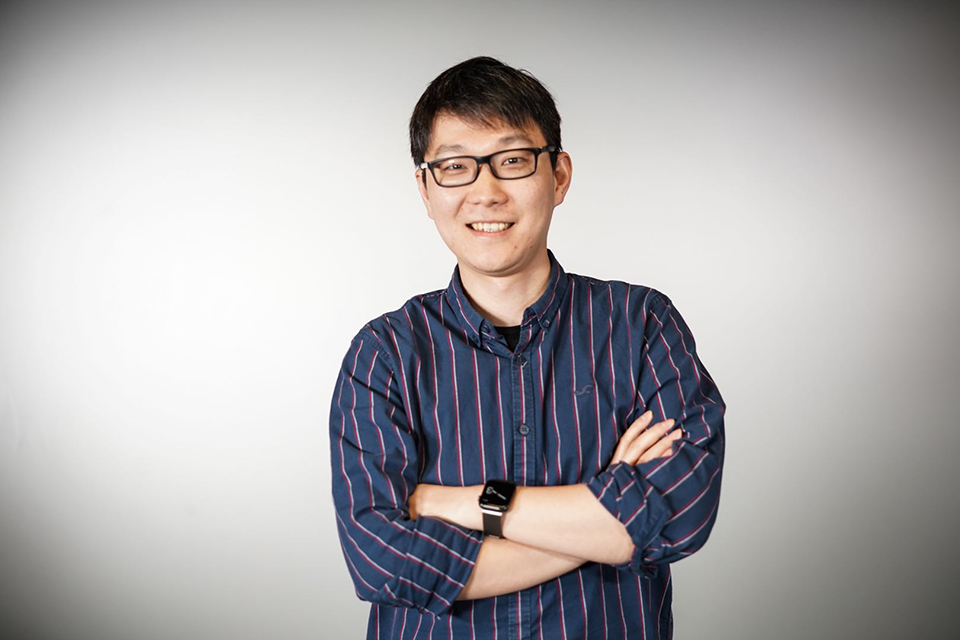

Dr LI, Chen Richard is an assistant professor affiliated with the Department of Applied Social Sciences and the Department of Computing at The Hong Kong Polytechnic University. He received BSc in computer science and technology from Nanjing University, and MSc (Distinction) in computer science and PhD from the City University of Hong Kong. Before joining The Hong Kong Polytechnic University, he worked as a senior research associate at the Centre for Innovative Applications of Internet and Multimedia Technologies (AIMtech Centre), City University of Hong Kong and a postdoc research fellow at the Interface Technology Lab New Zealand (HIT Lab NZ), University of Canterbury.
As a human-centered computing researcher, Dr Li's research interest is in collaborating with talents with various backgrounds to design new technology-assisted solutions for supporting people in their daily lives. His research outcomes related to the use of virtual reality for children with special education needs have been adopted by mainstream and special schools in Hong Kong. Academically, his research works were published in international journals such as Computers & Education (C&E), IEEE Transactions on Visualization and Computer Graphics (TVCG), and IEEE Transactions on Learning Technologies (TLT), as well as conference proceedings such as the proceedings of the IEEE Conference on Virtual Reality and 3D User Interfaces (VR) and the International Symposium on Mixed and Augmented Reality (ISMAR). He currently serves as the president of Hong Kong Society for Multimedia and Image Computing (HKSMIC), member of the governing board of the International Association for Pattern Recognition (IAPR), and member of the editorial board of the Journal of Computer Assisted Learning and Computers & Education: X Reality.